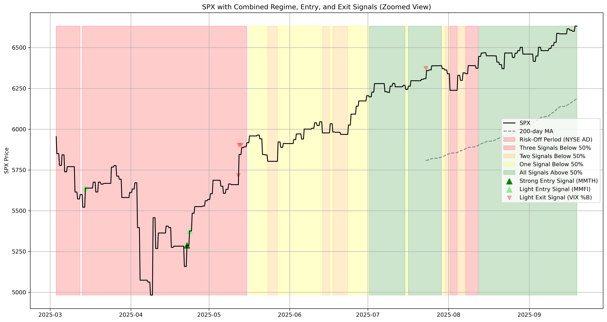

Strong Entry Signals (MMTH): Dark green triangles indicate strong entry signals based on 200-day market momentum.
Triggers when MMTH crosses above 25% threshold with no confirmation period required. These represent the most reliable entry signals to get long again after a market sell-off.
Light Entry Signals (MMFI & MMTW): Light green triangles indicate light entry signals based on shorter-term momentum indicators.
MMFI (50-day) and MMTW (20-day) both trigger when crossing above 25% threshold, but require 3-day confirmation periods to avoid false signals.
These provide earlier but less reliable entry signals compared to MMTH.
Exit Signals (VIX Bollinger): Light red downward triangles indicate exit signals based on VIX volatility analysis.
Uses 20-day Bollinger Bands (2 standard deviations) to calculate %B indicator. Exit signal triggers when VIX %B falls below 0,
indicating VIX is below its lower Bollinger Band and potentially signaling complacency or overbought conditions.
MMTH (Strong Entry): Loading...
MMFI (Light Entry): Loading...
MMTW (Light Entry): Loading...
VIX Exit Signal: Loading...
Red Background (Risk-Off Regime): Generated by NYSE Advance/Decline Ratio (ADRN) z-score analysis.
Uses 252-day lookback period with 50-day smoothing to calculate cumulative z-score. Risk-off regime triggers when z-score falls below -1.0 threshold,
indicating broad market weakness and defensive positioning.
Color-Coded Momentum Backgrounds: Based on the count of momentum indicators (MMTW, MMFI, MMTH) below 50% threshold:
Background Color: Loading...
Above 200-day MA: Loading...
NYSE AD Z-Score (Risk-On): Loading...
MM Signals Below 50%: Loading...